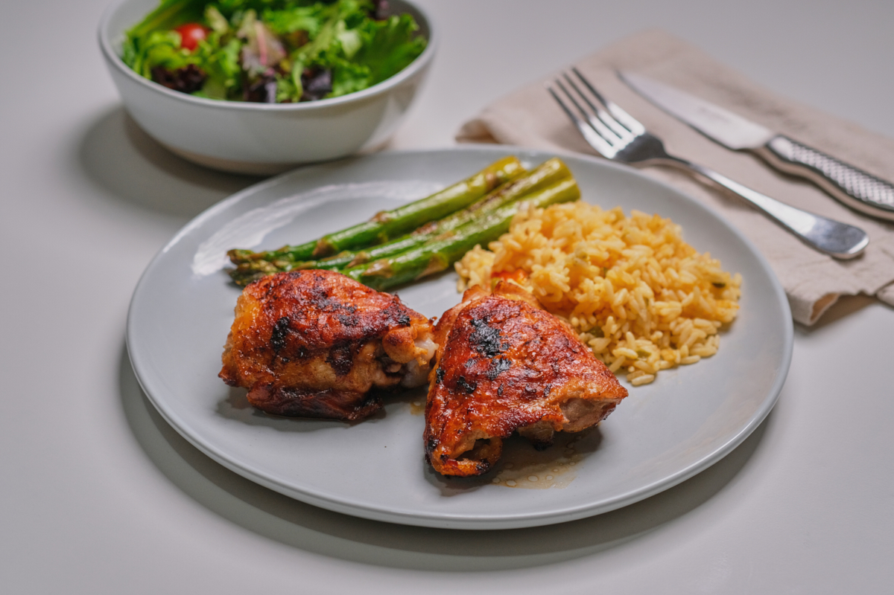

We all love fried chicken, how about one that’s not only easy to make but also juicy as well? In that case, read on! I used a simple but delicious marinade. Follow the steps below to achieve that crispy skin!
A link to the YouTube video: Marinated Fried Chicken Thighs
Ingredients
- 1/4 cup lime juice, (about 3 limes)
- 2 tablespoons extra virgin olive oil
- 1 tablespoon apple cider vinegar or any other vinegar
- 1 teaspoon ground cumin
- 1 or 1.25 teaspoon salt
- 1 jalapeño, sliced
- 4 chicken thighs with skin and bones
Instructions
- Prepare the marinade by juicing three limes to get 1/4 cup, place in a mixing bowl. Add in olive oil, apple cider vinegar, cumin and salt. Mix and set aside.
- Slice the jalapeño, you can leave the seeds out if you like.
- Place the chicken thighs in a glass container or in a marinade bag. Mix the jalapeños with the marinade liquid then pour it into the bag, seal well. Massage the bag to spread the marinade and jalapeños, leave bag flat. Leave chicken thighs marinade in the refrigerator ideally 24 hours or overnight, turn once.
- Take chicken thighs out of the refrigerator half an hour or so before cooking, set aside.
- Heat a frying pan and add just a little bit of oil, enough to lightly coat the surface. Once the pan is hot, the oil will be thinner in consistency. Spread the oil and coat it around the pan. Get the pan hot enough to where you start to see a tiny bit of smoke.
- Take out chicken thighs from marinade, one at a time, shake to remove as much liquid as possible before placing it on the hot pan. Place the chicken thighs with the skin side up first. TIP: use a splatter lid to reduce the amount of oil that splatters.
- Around 8 minutes or so, when you see the outer edges of the chicken thighs browning, flip them over to their skin side.
- Once seven or so minutes have passed, check to see underneath that the skin looks fried, if so, turn the chicken thighs on their sides to also fry the rest of the skin. You might need to lower the heat a little if your pan is making too much smoke. Continue to fry the rest of the skin on its other sides.
- Once the 165-degree temperature is reached, remove chicken thighs from the pan. If they need more time to cook, keep cooking with the skin side up. Leave chicken thighs to rest at least 5 minutes before serving.